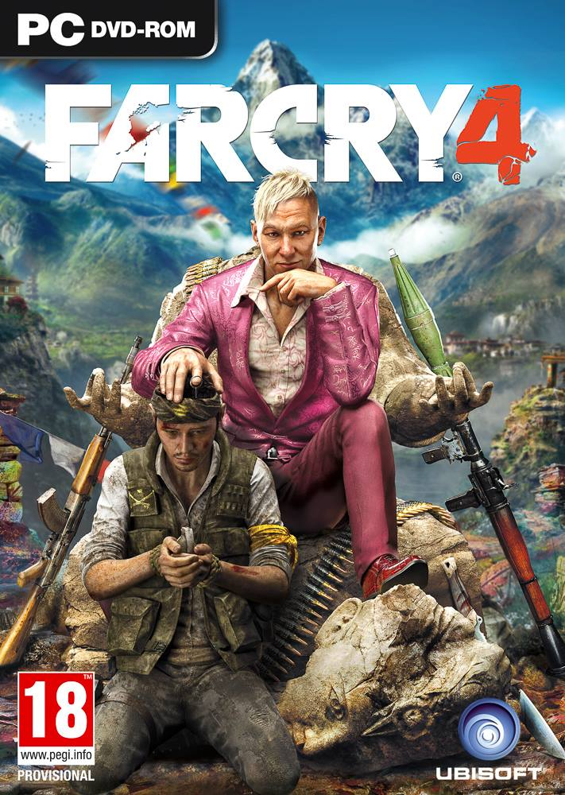

FarCry 4

Description:
Hidden in the towering Himalayas lies Kyrat, a country steeped in tradition and violence. You are Ajay Ghale. Traveling to Kyrat to fulfill your mother’s dying wish, you find yourself caught up in a civil war to overthrow the oppressive regime of dictator Pagan Min. Explore and navigate this vast open world, where danger and unpredictability lurk around every corner. Here, every decision counts, and every second is a story. Welcome to Kyrat.Hidden in the towering Himalayas lies Kyrat, a country steeped in tradition and violence. You are Ajay Ghale. Traveling to Kyrat to fulfill your mother’s dying wish, you find yourself caught up in a civil war to overthrow the oppressive regime of dictator Pagan Min. Explore and navigate this vast open world, where danger and unpredictability lurk around every corner. Here, every decision counts, and every second is a story. Welcome to Kyrat.Hidden in the towering Himalayas lies Kyrat, a country steeped in tradition and violence. You are Ajay Ghale. Traveling to Kyrat to fulfill your mother’s dying wish, you find yourself caught up in a civil war to overthrow the oppressive regime of dictator Pagan Min. Explore and navigate this vast open world, where danger and unpredictability lurk around every corner. Here, every decision counts, and every second is a story. Welcome to Kyrat.Hidden in the towering Himalayas lies Kyrat, a country steeped in tradition and violence. You are Ajay Ghale. Traveling to Kyrat to fulfill your mother’s dying wish, you find yourself caught up in a civil war to overthrow the oppressive regime of dictator Pagan Min. Explore and navigate this vast open world, where danger and unpredictability lurk around every corner. Here, every decision counts, and every second is a story. Welcome to Kyrat.